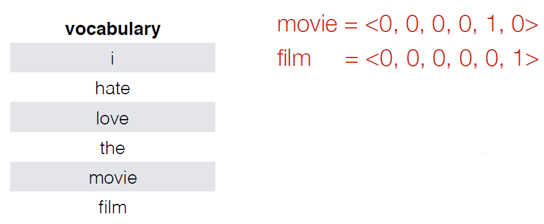
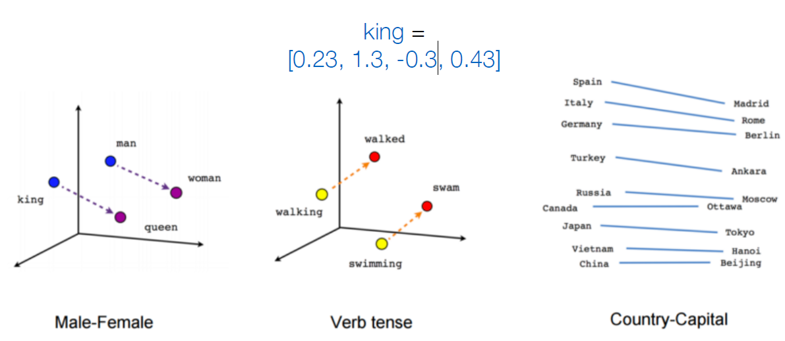
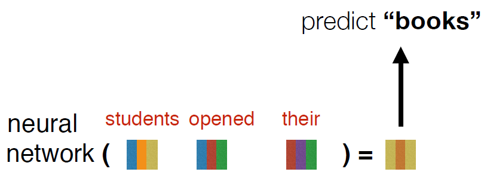
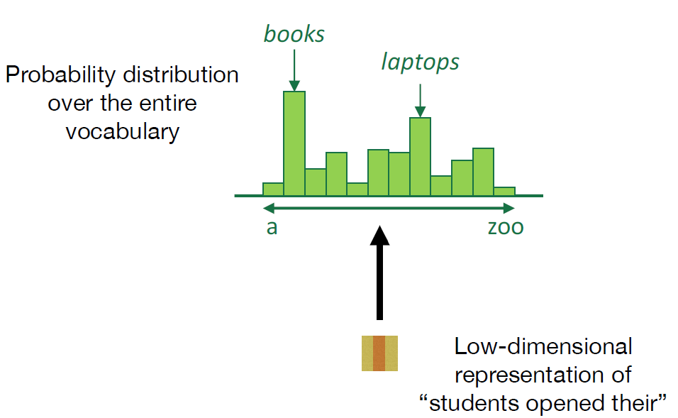
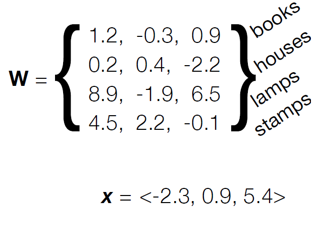
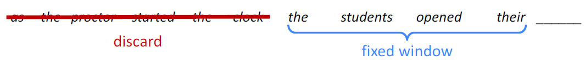
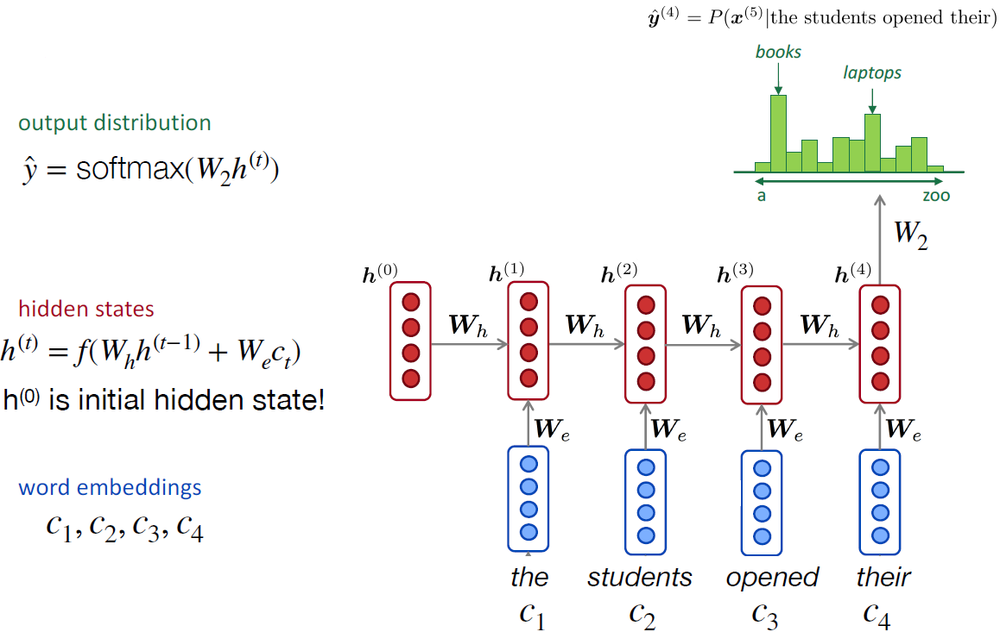

Neural Language Models
one-hot vectors

Shortcoming:
all words are equally (dis)similar: dot product is zero! these vectors are orthogonal
Neural networks
embeddings: represent words with low-dimensional vectors

neural networks compose word embeddings into vectors for phrases, sentences, and documents

Softmax layer: convert a vector representation into a probability distribution over the entire vocabulary

Each row of W contains feature weights for a corresponding word in the vocabulary.
Each dimension of x corresponds to a feature of the prefix


Composition functions
A fixed-window neural Language Model


how does this compare to a normal n-gram model?
Improvements over n-gram LM:
- No sparsity problem
- Model size is O(n) not O(exp(n))
Remaining problems:
- Fixed window is too small
- Enlarging window enlarges
- Window can never be large enough!
- Each ci uses different rows of W. We don’t share weights across the window.
Recurrent Neural Networks

RNN Advantages:
- Can process any length input
- Model size doesn’t increase for longer input
- Computation for step t can (in theory) use information from many steps back
- Weights are shared across timestep -> representations are shared
RNN Disadvantages:
- Recurrent computation is slow
- In practice, difficult to access information from many steps back